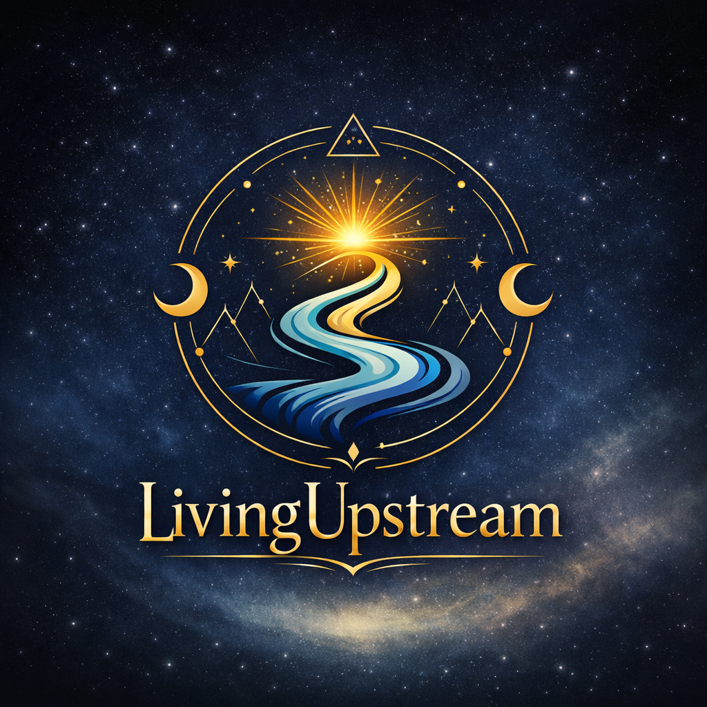

Season 1: Identifying Consciousness
Mind and body are not separate; alignment is the bridge.
Conscious awareness flows naturally when integration occurs.
Thought, emotion, and sensation are part of a dynamic system. Separating or ignoring one creates friction. Integrating mind and body allows energy to flow harmoniously and supports conscious action.
Begin by noticing how your mental state affects bodily tension, posture, or breathing. Observe without judgment. Then, notice how adjusting posture or breath affects thought clarity and emotional tone.
Take five minutes:
With consistent practice, your mind-body system becomes coherent, supporting upstream awareness.
Notice the mind-body connection in routine tasks, walking, or sitting. Pausing to align even briefly improves focus, clarity, and presence.